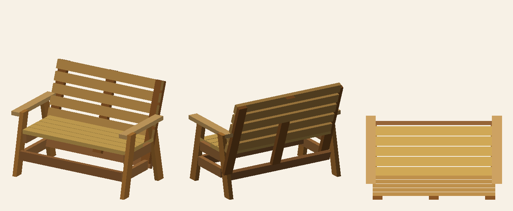
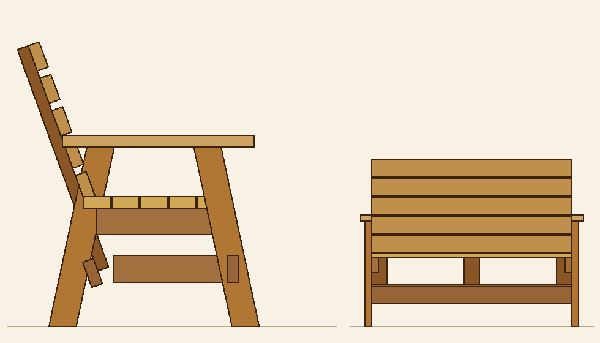

← All projects · 🪑 Interactive 3D model
Outdoor FurnitureTwo-Seat A-Frame Bench
A modern outdoor bench built entirely from 2×4 lumber. Two symmetric A-frame ends carry the seat; a separate reclined backrest bolts to the back legs. All joinery is glue plus screws and a handful of carriage bolts. Finished size: 48″ wide × ~32″ deep × 36½″ tall, seat at 17″, back reclined ~110°.
The model


Cut list
Everything is 2×4 (actual 1½″ × 3½″). Lengths are the long dimension of each board; end-cut angles are called out in the notes and detailed in the cut schedule below.
| Key | Part | Qty | Length | End cuts / notes |
|---|---|---|---|---|
| A | Front leg | 2 | 24″ | Both ends 12° bevel — foot sits flat on floor, top level under the armrest. |
| B | Back leg | 2 | 24″ | Both ends 12° bevel (mirror of the front leg). |
| C | Backrest post | 3 | 30⅞″ | Reclined ~20°; bottom cut ~20° to land flat on the rear beam. (L / centre / R) |
| D | Armrest | 2 | 25⅛″ | Laid flat. Round/ease the front corners. |
| E | Seat rail | 2 | 16¾″ | 2×4 on edge. Rear end cut ~20° to butt the backrest post. |
| F | Bottom rail | 2 | 15¾″ | 2×4 on edge, ~6″ off the floor. Rear end cut ~20° to butt the post. |
| G | Seat slat | 5 | 45″ | Square cuts. Tuck between the legs (no corner notches). |
| H | Back slat | 5 | 45″ | Square cuts. |
| J | Front cross beam | 1 | 45″ | 2×4 on edge, between the front legs. |
| K | Rear cross beam | 1 | 45″ | Canted ~20° (3½″ face up) so the three posts land on it flush. |
| Total | 25 | ≈ 70 linear feet of 2×4 | ||
Cut & notch schedule
The good news for the shop: with the slats inset between the legs and the rails butting the posts, no notches are required in the standard build. Everything is straight cuts plus a few repeated bevels — so you can cut all parts in one session and assemble in another.
- Leg feet & tops — 12° bevel. Cut both ends of all four legs at 12° so the splayed legs sit flat and the armrest beds level.
- Backrest post bottoms — ~20° cut. So each of the three posts lands flat on the canted rear beam.
- Seat- & bottom-rail rear ends — ~20° cut. So the rail butts cleanly against the reclined post's face.
- Rear cross beam — canted ~20°. Mounted with its 3½″ face turned up to meet the posts (a flush face joint, not a notch).
- Slats — inset to 45″. They tuck between the legs, so the corner notches a bench like this would normally need are avoided entirely.
Lumber, fasteners & tools
Lumber
| Material | Buy | Notes |
|---|---|---|
| 2×4 × 8 ft — exterior-rated (cedar, redwood, or pressure-treated) | 12 boards | Covers ~70 lin. ft of parts with margin for knots/defects. Each 8-ft board yields two 45″ slats. |
Save the straightest, knot-free stock for the armrests, seat slats, and back slats.
Fasteners & finishing
| Item | Qty | Used for |
|---|---|---|
| ⅜″ × 5″ exterior carriage bolts + washers + nuts | 4 sets | Backrest posts → back legs (the one high-leverage joint) |
| 2½″ exterior pocket-hole screws | ~24 | Hidden frame joints: seat rails, bottom rails & front beam → legs |
| 2½″ exterior deck screws (flat head) | ~50 | Seat slats → rails; back slats → posts |
| 3″ exterior deck screws | ~16 | Armrests → legs/backrest; posts → rear beam |
| Waterproof wood glue (Titebond III) | 1 bottle | Every joint — this carries most of the long-term load |
| Sandpaper 80/120/220, exterior stain or oil + finish | — | Smoothing & weather protection |
Tools
- Miter saw (set to 12° and 20° for the angle cuts) or a circular saw + speed square
- Drill/driver + countersink; a pocket-hole jig (e.g. Kreg) for the hidden frame joints
- ⅜″ drill bit + wrench/socket for the carriage bolts
- Clamps, tape measure, square, pencil; random-orbit sander; safety glasses & hearing protection
Fastener schedule — where each one goes
The rule: glue every joint, then use the lightest fastener that does the job. Bolts only where there's real leverage; pocket screws for hidden frame joints; deck screws for slats and armrests. A nail gun, if you have one, is only for tacking parts in alignment while the glue sets — not a final fastener.
| Joint | Fastener | Where / how many |
|---|---|---|
| Backrest post ↔ back leg | ⅜″ carriage bolt | 2 per side, through the laminated post + leg (~3″ and ~9″ above the seat) |
| Seat rail ↔ legs | Pocket screws | 2 per end (hidden under the seat) |
| Bottom rail ↔ legs | Pocket screws | 2 per end |
| Front beam ↔ front legs | Pocket screws | 2 per end |
| Backrest posts ↔ rear beam | 3″ deck screws | 2 per post, through the flush faces |
| Seat slats ↔ seat rails | 2½″ deck screws | 2 per slat per rail, countersunk from the top |
| Back slats ↔ posts | 2½″ deck screws | 2 per slat per post, driven from behind (hidden) |
| Armrest ↔ leg top + backrest | 3″ deck screws | 2 into the leg top, 2 into the backrest; counterbore & plug |
| Centre post ↔ seat slat 5 + rear beam | 2½″ deck screws | 2 each end |
Step-by-step assembly
Cut everything
Work through the cut list. Set the saw once to 12° and cut all leg ends; once to 20° and cut the post bottoms and the rail rear ends. Cut the slats and beams square. Label each part and sand to 120 grit before assembly.
Build the two A-frame ends
For each side, join the front leg and back leg with the seat rail (top at 15½″ so the seat lands at 17″) and the bottom rail (~6″ off the floor), using pocket screws + glue. The legs splay symmetrically. Build both ends identical and check for square.
Bolt on the outer backrest posts
Clamp a backrest post to the inboard face of each back leg, reclined back. Drill ⅜″ and set two carriage bolts per side. (The centre post is fitted later, with the rear beam.)
Join the two ends
Stand the ends parallel, 45″ apart inside. Add the front cross beam between the front legs (pocket screws). Add the canted rear cross beam so its 3½″ face receives the backrest posts; screw the posts to it (3″ deck screws). Drop in the centre backrest post, landing it on the rear beam.
Lay the seat slats
Set the five 45″ seat slats across the seat rails with even ⅜″ gaps (they tuck between the legs). Fasten each to both rails with 2½″ deck screws, countersunk. Screw the centre post to slat 5.
Add the back slats
Fasten the five 45″ back slats across the three posts, even gaps, working up from the seat. Drive the screws from behind through the posts into the slats to keep the face clean.
Fit the armrests
Set each armrest on the level top of the front and back legs, overhanging the front. Counterbore and screw down into the leg top and back into the backrest; glue and plug the holes.
Final sanding
120 then 220 grit, ease every edge a hand or leg will touch, fill/plug screw holes, sand flush.
Finishing
Clean & dry
Dust off; make sure the wood is dry (let wet pressure-treated stock dry for days to weeks).
Seal it
Brush on an exterior penetrating oil or stain-sealer with the grain, wipe back the excess, two thin coats. A warm honey/cedar tone suits this bench.
Maintain
Re-oil annually if it lives in full sun and rain; keep the feet off standing water.